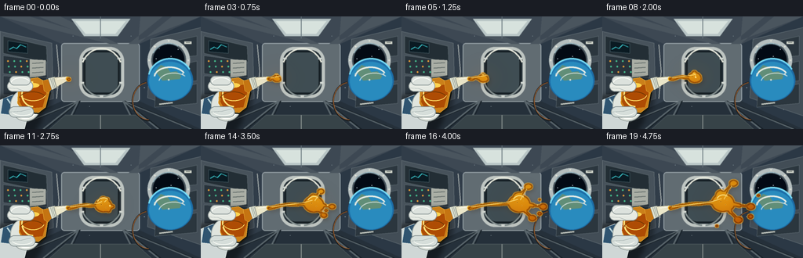
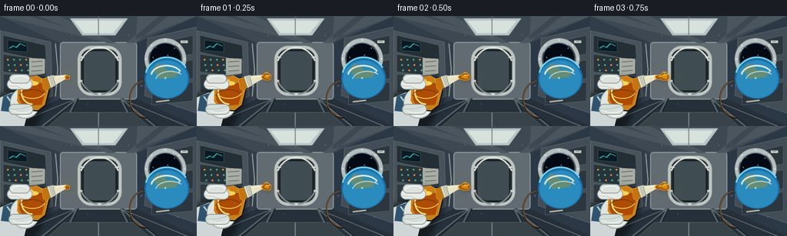

CODING AGENTS AS PIXEL WORLD MODELS
traex/GPT-5.6-Sol · phygen_004
点击播放 · 原生 RGB 像素
逐轮保存的候选
回放视频、检查图与代码变化。
每份候选均可单独播放。实际图片检查记录在下方工具轨迹中。
候选 01播放与检查图
点击播放 · 原生 RGB 像素


展开代码变化
--- 上一保存版本
+++ 本次保存版本
@@ -0,0 +1,327 @@
+from pathlib import Path
+import math
+import numpy as np
+from PIL import Image, ImageDraw, ImageFilter, ImageChops
+import artifact_io
+
+W, H, N = 256, 144, 20
+S = 3
+WW, HH = W*S, H*S
+RESAMPLE = Image.Resampling.LANCZOS
+rng = np.random.default_rng(4197)
+
+
+def sc(v):
+ return int(round(v*S))
+
+def box(b):
+ return tuple(sc(x) for x in b)
+
+def pts(p):
+ return [(sc(x), sc(y)) for x, y in p]
+
+def smooth(x):
+ x = max(0.0, min(1.0, x))
+ return x*x*(3-2*x)
+
+def rounded(draw, b, r, fill, outline=None, width=1):
+ draw.rounded_rectangle(box(b), radius=sc(r), fill=fill, outline=outline, width=sc(width))
+
+def base_background():
+ # Cool, directional cabin illumination.
+ y, x = np.mgrid[0:HH, 0:WW]
+ vignette = np.sqrt(((x-WW*.50)/(WW*.73))**2 + ((y-HH*.50)/(HH*.86))**2)
+ glow = np.exp(-(((x-WW*.51)/(WW*.40))**2 + ((y-HH*.42)/(HH*.48))**2))
+ arr = np.empty((HH, WW, 3), dtype=np.float32)
+ arr[...,0] = 24 + 38*glow - 16*np.clip(vignette, 0, 1)
+ arr[...,1] = 34 + 44*glow - 18*np.clip(vignette, 0, 1)
+ arr[...,2] = 47 + 55*glow - 18*np.clip(vignette, 0, 1)
+ im = Image.fromarray(np.uint8(np.clip(arr,0,255)), 'RGB')
+ d = ImageDraw.Draw(im)
+
+ # Long space-station module with converging wall and floor lines.
+ d.polygon(pts([(0,0),(256,0),(178,35),(78,35)]), fill=(61,72,83))
+ d.polygon(pts([(0,0),(78,35),(79,108),(0,144)]), fill=(49,61,73))
+ d.polygon(pts([(256,0),(178,35),(177,108),(256,144)]), fill=(43,56,69))
+ d.polygon(pts([(0,144),(79,108),(177,108),(256,144)]), fill=(37,48,58))
+ # Rear bulkhead and hatch.
+ d.rounded_rectangle(box((78,34,178,109)), radius=sc(4), fill=(97,108,114), outline=(160,171,175), width=sc(1))
+ d.rounded_rectangle(box((101,39,158,104)), radius=sc(18), fill=(36,47,54), outline=(191,198,194), width=sc(4))
+ d.rounded_rectangle(box((107,44,152,99)), radius=sc(14), fill=(63,77,83), outline=(21,30,35), width=sc(2))
+ # Rear hatch bands and latches.
+ d.arc(box((102,40,157,103)), 205, 335, fill=(230,232,220), width=sc(2))
+ d.arc(box((102,40,157,103)), 25, 155, fill=(131,143,143), width=sc(2))
+ for ang in [25, 90, 155, 215, 325]:
+ cx, cy = 129.5 + 27*math.cos(math.radians(ang)), 71.5 + 31*math.sin(math.radians(ang))
+ d.rectangle(box((cx-2,cy-1,cx+2,cy+1)), fill=(210,216,211))
+ # Ceiling beams and light panels.
+ for xa, xb in [(0,38),(49,77),(179,207),(219,256)]:
+ d.polygon(pts([(xa,0),(xb,0),(151 if xa<128 else 164,35),(140 if xa<128 else 176,35)]), fill=(74,85,94))
+ d.polygon(pts([(91,3),(166,3),(150,25),(107,25)]), fill=(184,197,197))
+ d.polygon(pts([(96,6),(160,6),(147,22),(109,22)]), fill=(215,226,221))
+ d.line(pts([(128,0),(128,28)]), fill=(99,114,122), width=sc(1))
+ # Floor rails.
+ for xx in [13,55,82,175,202,244]:
+ target = 100 if xx < 128 else 157
+ d.line(pts([(xx,144),(target,108)]), fill=(90,102,108), width=sc(2))
+ d.line(pts([(xx+3,144),(target+2,108)]), fill=(22,31,38), width=sc(1))
+ d.polygon(pts([(83,126),(173,126),(193,144),(63,144)]), fill=(55,67,72), outline=(120,132,132))
+ d.line(pts([(128,126),(128,144)]), fill=(148,156,151), width=sc(1))
+
+ # Left equipment racks.
+ d.polygon(pts([(0,19),(66,34),(68,105),(0,126)]), fill=(71,82,91), outline=(129,140,145))
+ for i, (yy0, yy1) in enumerate([(25,47),(50,73),(76,100)]):
+ d.polygon(pts([(4,yy0),(59,38+(yy0-25)*.78),(60,42+(yy1-25)*.78),(4,yy1)]),
+ fill=(35+i*5,46+i*5,53+i*6), outline=(113,126,130))
+ # Instrument displays and indicator lights.
+ d.polygon(pts([(10,31),(35,35),(35,47),(10,45)]), fill=(10,26,34), outline=(99,130,139))
+ d.line(pts([(12,42),(17,39),(21,41),(26,36),(33,39)]), fill=(60,202,207), width=sc(1))
+ for iy in range(3):
+ for ix in range(4):
+ cx = 10 + ix*8 + iy*1.1; cy = 57 + iy*7
+ col = (72,198,147) if (ix+iy)%3 else (244,164,56)
+ d.ellipse(box((cx-1,cy-1,cx+1,cy+1)), fill=col)
+ d.polygon(pts([(38,55),(58,56),(58,75),(38,78)]), fill=(170,174,165), outline=(215,218,205))
+ for yy0 in [60,66,72]:
+ d.line(pts([(41,yy0),(55,yy0-1)]), fill=(64,76,78), width=sc(1))
+ # Right equipment racks.
+ d.polygon(pts([(192,29),(256,14),(256,127),(188,104)]), fill=(66,77,86), outline=(135,147,150))
+ for yy0 in [37,69,98]:
+ d.polygon(pts([(198,yy0),(251,yy0-12),(251,yy0+13),(197,yy0+18)]), fill=(43,54,62), outline=(114,128,132))
+ # Small labels and handles.
+ for yy0 in [48,81,112]:
+ d.line(pts([(203,yy0),(220,yy0-2)]), fill=(194,199,191), width=sc(2))
+ for x0, y0 in [(235,32),(228,88),(20,91),(48,102)]:
+ d.rectangle(box((x0,y0,x0+9,y0+3)), fill=(214,218,207))
+ d.line(pts([(x0+2,y0+1),(x0+7,y0+1)]), fill=(83,91,89), width=sc(.5))
+
+ # Porthole on right, with Earth beyond it.
+ d.ellipse(box((188,29,242,83)), fill=(22,28,34), outline=(181,190,190), width=sc(5))
+ d.ellipse(box((193,34,237,78)), fill=(3,10,20), outline=(70,83,91), width=sc(2))
+ # sparse stars
+ for sx, sy in [(203,41),(227,42),(218,51),(232,58),(199,54)]:
+ d.ellipse(box((sx-.5,sy-.5,sx+.5,sy+.5)), fill=(220,232,236))
+ # blue Earth limb
+ d.ellipse(box((188,55,246,108)), fill=(28,108,166))
+ d.ellipse(box((190,58,244,107)), fill=(41,139,190))
+ d.arc(box((188,53,246,108)), 194, 331, fill=(119,221,247), width=sc(2))
+ d.polygon(pts([(198,70),(205,62),(213,65),(217,71),(225,70),(231,76),(229,80),(207,82)]), fill=(97,142,120))
+ d.arc(box((196,64,237,91)), 185, 335, fill=(235,240,232), width=sc(2))
+ d.arc(box((202,72,241,96)), 190, 318, fill=(218,231,228), width=sc(1))
+ # Porthole reflection and bolts
+ d.arc(box((193,34,237,78)), 205, 304, fill=(158,191,202), width=sc(1))
+ for a in range(0,360,45):
+ cx, cy = 215 + 25*math.cos(math.radians(a)), 56 + 25*math.sin(math.radians(a))
+ d.ellipse(box((cx-1,cy-1,cx+1,cy+1)), fill=(221,224,214))
+
+ # Cables and floating utility straps sell the interior.
+ d.arc(box((168,83,213,134)), 90, 260, fill=(25,31,35), width=sc(2))
+ d.arc(box((169,84,211,132)), 92, 260, fill=(216,119,43), width=sc(.7))
+ d.line(pts([(72,36),(75,70),(72,105)]), fill=(183,190,187), width=sc(1))
+ # tiny airborne dust motes, fixed in cabin coordinates
+ for sx, sy, rr in [(93,25,.45),(167,25,.4),(184,91,.5),(114,115,.4),(151,17,.35),(231,119,.45)]:
+ d.ellipse(box((sx-rr,sy-rr,sx+rr,sy+rr)), fill=(167,183,191))
+ return im.filter(ImageFilter.GaussianBlur(sc(.18)))
+
+BACKGROUND = base_background()
+
+
+def draw_glove_and_bottle(im, p):
+ d = ImageDraw.Draw(im, 'RGBA')
+ # Soft contact shadows.
+ sh = Image.new('RGBA', (WW,HH), (0,0,0,0)); sd = ImageDraw.Draw(sh)
+ sd.ellipse(box((-13,96,55,153)), fill=(0,0,0,110))
+ sd.rounded_rectangle(box((21,78,66,124)), radius=sc(14), fill=(0,0,0,90))
+ sh = sh.filter(ImageFilter.GaussianBlur(sc(3)))
+ im.paste(sh, (0,0), sh)
+ d = ImageDraw.Draw(im, 'RGBA')
+ # Astronaut sleeve and blue cuff.
+ d.polygon(pts([(-8,110),(16,100),(37,121),(30,149),(-8,149)]), fill=(207,215,214,255), outline=(245,248,241,255))
+ d.polygon(pts([(4,105),(18,100),(29,111),(18,126),(1,124)]), fill=(48,84,112,255), outline=(112,151,170,255))
+ d.line(pts([(9,105),(20,120)]), fill=(181,207,213,190), width=sc(2))
+ # Palm behind bottle.
+ d.ellipse(box((13,93,52,134)), fill=(224,229,222,255), outline=(154,164,161,255), width=sc(1))
+ d.arc(box((16,97,49,131)), 25, 168, fill=(250,252,245,220), width=sc(2))
+
+ # Bottle silhouette compresses as the hand squeezes it.
+ pinch = 3.2*smooth(p)
+ bottle = [(27,81),(48,78),(59,84),(63,96),(58,116),(49,123),(29,121),
+ (22,111),(23,94)]
+ bottle = [(x + (pinch if x<42 and 91<y<115 else -pinch if x>=42 and 91<y<115 else 0), y) for x,y in bottle]
+ # bottle shadow and body
+ d.polygon(pts([(x+1.5,y+2) for x,y in bottle]), fill=(24,24,18,100))
+ d.polygon(pts(bottle), fill=(203,128,26,235), outline=(255,205,82,255))
+ # translucent interior honey gradient bands
+ d.polygon(pts([(27,91),(56,87),(59,97),(54,116),(30,118),(25,109)]), fill=(174,76,4,125))
+ d.arc(box((27,83,57,116)), 90, 270, fill=(255,226,124,190), width=sc(2))
+ d.ellipse(box((31,85,50,91)), fill=(255,212,81,85))
+ # creases caused by squeeze
+ d.arc(box((24+pinch,96,59-pinch,115)), 190, 340, fill=(114,56,4,170), width=sc(1))
+ d.arc(box((25+pinch,88,59-pinch,108)), 18, 158, fill=(255,220,101,145), width=sc(1))
+ # neck, cap, and tapered nozzle pointing into the cabin
+ d.polygon(pts([(54,82),(63,80),(69,89),(61,98),(56,95)]), fill=(197,116,18,255), outline=(251,197,72,255))
+ d.polygon(pts([(61,79),(70,77),(75,89),(66,94)]), fill=(222,226,208,255), outline=(112,121,116,255))
+ for k in range(4):
+ d.line(pts([(64+k*2,79),(68+k*2,92)]), fill=(145,153,146,180), width=sc(.6))
+ d.polygon(pts([(69,78),(85.5,76.8),(87.5,81.2),(72,90)]), fill=(235,231,202,255), outline=(128,128,111,255))
+ d.line(pts([(73,80),(84,78.7)]), fill=(255,255,241,220), width=sc(1))
+ d.ellipse(box((83.7,77.1,88.8,82.2)), fill=(96,52,10,255), outline=(245,191,60,255), width=sc(1))
+
+ # Fingers curl over and under the bottle, clearly applying pressure.
+ d.rounded_rectangle(box((9,82,42+pinch,96)), radius=sc(7), fill=(231,235,228,255), outline=(150,160,158,255), width=sc(1))
+ d.rounded_rectangle(box((12,76,39,88)), radius=sc(6), fill=(220,226,221,255), outline=(145,156,155,255), width=sc(1))
+ d.arc(box((14,78,38,91)), 185, 338, fill=(255,255,250,220), width=sc(1))
+ d.rounded_rectangle(box((11,115,43+pinch,129)), radius=sc(7), fill=(214,222,218,255), outline=(137,149,149,255), width=sc(1))
+ d.arc(box((15,115,42,127)), 20, 170, fill=(247,250,244,220), width=sc(1))
+ # seams
+ d.line(pts([(9,91),(22,92),(30,95)]), fill=(152,165,163,180), width=sc(.7))
+ d.line(pts([(13,122),(27,121),(39,118)]), fill=(143,156,156,170), width=sc(.7))
+
+
+def polyline_mask(draw, points, widths, fill=255):
+ # Tapered viscous line represented by overlapping segments and joints.
+ for i in range(len(points)-1):
+ a, b = points[i], points[i+1]
+ w = (widths[i] + widths[i+1]) * .5
+ draw.line(pts([a,b]), fill=fill, width=max(1,sc(w)))
+ for (x,y), w in zip(points, widths):
+ r=w*.50
+ draw.ellipse(box((x-r,y-r,x+r,y+r)), fill=fill)
+
+
+def create_honey_mask(p):
+ m = Image.new('L', (WW,HH), 0)
+ d = ImageDraw.Draw(m)
+ tip=(87.0,79.6)
+ if p < .025:
+ d.ellipse(box((85.3,77.9,90.1,82.5)), fill=255)
+ return m
+ # Main stream grows slowly and remains coherent in microgravity.
+ advance = smooth(p*.92 + .08)
+ hx = 88 + 66*advance
+ hy = 79.3 - 6.0*advance + 1.15*math.sin(p*math.pi*1.15)
+ samples=[]; widths=[]
+ count=18
+ for i in range(count):
+ u=i/(count-1)
+ x=tip[0] + (hx-tip[0])*u
+ y=tip[1] + (hy-tip[1])*u - 2.0*math.sin(u*math.pi)*smooth(p) + .65*math.sin(u*3*math.pi+p*2)
+ # Narrow neck, swelling at the floating leading mass.
+ w=3.3 + 1.1*math.sin(u*2.4*math.pi+p)**2 + (9.5*smooth((u-.70)/.30))*smooth(p)
+ widths.append(w); samples.append((x,y))
+ polyline_mask(d,samples,widths)
+ # Rounded, irregular main blob under surface tension.
+ r=4.2+8.4*smooth(p)
+ d.ellipse(box((hx-r*1.20,hy-r*.93,hx+r*1.15,hy+r*.98)),fill=255)
+ d.ellipse(box((hx-r*.70,hy-r*1.20,hx+r*.56,hy+r*.72)),fill=255)
+ d.ellipse(box((hx-r*.60,hy-r*.42,hx+r*1.20,hy+r*.93)),fill=255)
+
+ # Three lobes grow radially rather than falling, expressing zero gravity.
+ q=smooth((p-.34)/.66)
+ if q>0:
+ arms=[((hx-1,hy-3),(hx+13*q,hy-25*q),6.0,2.2),
+ ((hx+2,hy+3),(hx+19*q,hy+22*q),6.5,2.4),
+ ((hx+5,hy),(hx+35*q,hy+5*q),7.0,2.0)]
+ for ai,(a,b,w0,w1) in enumerate(arms):
+ mid=((a[0]+b[0])*.5 + math.sin(p*5+ai)*2*q,
+ (a[1]+b[1])*.5 + math.cos(p*4+ai)*1.5*q)
+ polyline_mask(d,[a,mid,b],[w0,w0*.72,w1])
+ rb=2.2+3.1*q
+ d.ellipse(box((b[0]-rb,b[1]-rb*.8,b[0]+rb*1.15,b[1]+rb*.9)),fill=255)
+ # Left-upward fold gives the central mass an organic sheet shape.
+ d.ellipse(box((hx-10*q,hy-16*q,hx+3*q,hy-2*q)),fill=255)
+
+ # Satellite droplets pinch off at staggered times and continue inertially.
+ droplet_specs=[(.47, (hx+1,hy-7), (10,-19), 2.6),
+ (.59, (hx+7,hy+4), (28,14), 3.5),
+ (.70, (hx+9,hy-1), (36,-8), 2.2),
+ (.78, (hx-3,hy+5), (-5,25), 2.0)]
+ for k,(start,origin,velocity,rad) in enumerate(droplet_specs):
+ z=smooth((p-start)/(1-start))
+ if z<=0: continue
+ # base origins track head but then spread away in several directions
+ ox,oy=origin
+ cx=ox+velocity[0]*z
+ cy=oy+velocity[1]*z
+ rr=rad*(.5+.5*z)
+ d.ellipse(box((cx-rr,cy-rr*.86,cx+rr*1.08,cy+rr*.9)),fill=255)
+ # Merge tiny gaps but keep tendrils crisp.
+ return m.filter(ImageFilter.GaussianBlur(sc(.42)))
+
+
+def render_honey(im, p):
+ mask=create_honey_mask(p)
+ # Soft amber refraction/shadow on the cabin behind the fluid.
+ shadow=mask.filter(ImageFilter.GaussianBlur(sc(3.0)))
+ shade=Image.new('RGBA',(WW,HH),(49,22,1,0)); shade.putalpha(shadow.point(lambda a:int(a*.34)))
+ im.alpha_composite(shade,(sc(1.2),sc(2.0)))
+
+ yy,xx=np.mgrid[0:HH,0:WW]
+ # Rich translucent amber volume, lit from the overhead cabin panel.
+ local_hi=np.exp(-(((xx/S-124)/69)**2 + ((yy/S-57)/37)**2))
+ band=.5+.5*np.sin((xx*.034 + yy*.016))
+ h=np.zeros((HH,WW,4),dtype=np.uint8)
+ h[...,0]=np.clip(178+54*local_hi+11*band,0,255)
+ h[...,1]=np.clip(72+92*local_hi+14*band,0,255)
+ h[...,2]=np.clip(2+19*local_hi,0,255)
+ h[...,3]=np.asarray(mask)
+ honey=Image.fromarray(h,'RGBA')
+ im.alpha_composite(honey)
+
+ # Dark internal rim and luminous gold perimeter define liquid thickness.
+ minmask=mask.filter(ImageFilter.MinFilter(9))
+ inner_edge=ImageChops.subtract(mask,minmask)
+ rim=Image.new('RGBA',(WW,HH),(105,39,0,0)); rim.putalpha(inner_edge.point(lambda a:int(a*.58)))
+ im.alpha_composite(rim)
+ maxmask=mask.filter(ImageFilter.MaxFilter(5))
+ outer_edge=ImageChops.subtract(maxmask,mask)
+ edge=Image.new('RGBA',(WW,HH),(255,177,30,0)); edge.putalpha(outer_edge.point(lambda a:int(a*.70)))
+ im.alpha_composite(edge)
+
+ # Specular streaks and pin highlights, clipped to honey.
+ hi=Image.new('L',(WW,HH),0); hd=ImageDraw.Draw(hi)
+ advance=smooth(p*.92+.08); hx=88+66*advance; hy=79.3-6*advance+1.15*math.sin(p*math.pi*1.15)
+ hd.line(pts([(89,78.2),(104+33*advance,75.2-3*advance),(hx-2,hy-5)]),fill=190,width=sc(1.25))
+ hd.arc(box((hx-9,hy-10,hx+9,hy+7)),205,309,fill=245,width=sc(1.4))
+ q=smooth((p-.34)/.66)
+ if q>0:
+ hd.line(pts([(hx+1,hy-4),(hx+11*q,hy-21*q)]),fill=180,width=sc(.9))
+ hd.ellipse(box((hx+27*q-1,hy+2*q-1,hx+27*q+1,hy+2*q+1)),fill=245)
+ hi=ImageChops.multiply(hi,mask)
+ shine=Image.new('RGBA',(WW,HH),(255,229,128,0)); shine.putalpha(hi)
+ im.alpha_composite(shine)
+
+ # A few trapped micro-bubbles carried with the viscous main lobe.
+ bd=Image.new('RGBA',(WW,HH),(0,0,0,0)); b=ImageDraw.Draw(bd)
+ for dx,dy,rr in [(-3,-1,1.0),(3,3,.7),(5,-3,.55)]:
+ cx,cy=hx+dx,hy+dy
+ b.ellipse(box((cx-rr,cy-rr,cx+rr,cy+rr)),fill=(119,53,2,90),outline=(255,205,73,150),width=sc(.45))
+ bd.putalpha(ImageChops.multiply(bd.getchannel('A'),mask))
+ im.alpha_composite(bd)
+
+
+def generate():
+ frames=[]
+ for i in range(N):
+ p=i/(N-1)
+ # Work in RGBA for layered translucent honey.
+ frame=BACKGROUND.convert('RGBA')
+ draw_glove_and_bottle(frame,p)
+ render_honey(frame,p)
+ # Slight warm bounce light near fluid, strongest late in the shot.
+ glow=Image.new('RGBA',(WW,HH),(0,0,0,0)); gd=ImageDraw.Draw(glow)
+ hx=88+66*smooth(p*.92+.08); hy=79.3-6*smooth(p*.92+.08)
+ gd.ellipse(box((hx-25,hy-20,hx+25,hy+20)),fill=(255,133,25,int(10+12*p)))
+ glow=glow.filter(ImageFilter.GaussianBlur(sc(12)))
+ # low-opacity glow sits over scene but under a final crisp fluid glint effect
+ frame.alpha_composite(glow)
+ # Downsample gives natural antialiasing and a photographic softness.
+ rgb=frame.convert('RGB').resize((W,H),RESAMPLE)
+ arr=np.asarray(rgb,dtype=np.uint8)
+ frames.append(arr)
+ frames=np.stack(frames,axis=0)
+ artifact_io.save(frames,Path(__file__).resolve().parent)
+ return frames
+
+if __name__=='__main__':
+ generate()
可观测工具轨迹
实际执行的命令与返回图片。
命令 1exit 0
/bin/bash -lc "cat prompt.txt && printf '\\n--- GENERATION_RULES.md ---\\n' && cat GENERATION_RULES.md && printf '\\n--- task_spec.json ---\\n' && cat task_spec.json"
命令 2exit 0
/bin/bash -lc "find . -maxdepth 2 -type f -printf '%p\\n' | sort && printf '\\n--- binaries ---\\n' && command -v ffmpeg || true && command -v blender || true && command -v python3 || true"
命令 3exit 0
/bin/bash -lc 'cat artifact_io.py'
命令 4exit 0
/bin/bash -lc "cat > generate.py <<'PY'
from pathlib import Path
import math
import numpy as np
from PIL import Image, ImageDraw, ImageFilter, ImageChops
import artifact_io
W, H, N = 256, 144, 20
S = 3
WW, HH = W*S, H*S
RESAMPLE = Image.Resampling.LANCZOS
rng = np.random.default_rng(4197)
def sc(v):
return int(round(v*S))
def box(b):
return tuple(sc(x) for x in b)
def pts(p):
return [(sc(x), sc(y)) for x, y in p]
def smooth(x):
x = max(0.0, min(1.0, x))
return x*x*(3-2*x)
def rounded(draw, b, r, fill, outline=None, width=1):
draw.rounded_rectangle(box(b), radius=sc(r), fill=fill, outline=outline, width=sc(width))
def base_background():
# Cool, directional cabin illumination.
y, x = np.mgrid[0:HH, 0:WW]
vignette = np.sqrt(((x-WW*.50)/(WW*.73))**2 + ((y-HH*.50)/(HH*.86))**2)
glow = np.exp(-(((x-WW*.51)/(WW*.40))**2 + ((y-HH*.42)/(HH*.48))**2))
arr = np.empty((HH, WW, 3), dtype=np.float32)
arr[...,0] = 24 + 38*glow - 16*np.clip(vignette, 0, 1)
arr[...,1] = 34 + 44*glow - 18*np.clip(vignette, 0, 1)
arr[...,2] = 47 + 55*glow - 18*np.clip(vignette, 0, 1)
im = Image.fromarray(np.uint8(np.clip(arr,0,255)), 'RGB')
d = ImageDraw.Draw(im)
# Long space-station module with converging wall and floor lines.
d.polygon(pts([(0,0),(256,0),(178,35),(78,35)]), fill=(61,72,83))
d.polygon(pts([(0,0),(78,35),(79,108),(0,144)]), fill=(49,61,73))
d.polygon(pts([(256,0),(178,35),(177,108),(256,144)]), fill=(43,56,69))
d.polygon(pts([(0,144),(79,108),(177,108),(256,144)]), fill=(37,48,58))
# Rear bulkhead and hatch.
d.rounded_rectangle(box((78,34,178,109)), radius=sc(4), fill=(97,108,114), outline=(160,171,175), width=sc(1))
d.rounded_rectangle(box((101,39,158,104)), radius=sc(18), fill=(36,47,54), outline=(191,198,194), width=sc(4))
d.rounded_rectangle(box((107,44,152,99)), radius=sc(14), fill=(63,77,83), outline=(21,30,35), width=sc(2))
# Rear hatch bands and latches.
d.arc(box((102,40,157,103)), 205, 335, fill=(230,232,220), width=sc(2))
d.arc(box((102,40,157,103)), 25, 155, fill=(131,143,143), width=sc(2))
for ang in [25, 90, 155, 215, 325]:
cx, cy = 129.5 + 27*math.cos(math.radians(ang)), 71.5 + 31*math.sin(math.radians(ang))
d.rectangle(box((cx-2,cy-1,cx+2,cy+1)), fill=(210,216,211))
# Ceiling beams and light panels.
for xa, xb in [(0,38),(49,77),(179,207),(219,256)]:
d.polygon(pts([(xa,0),(xb,0),(151 if xa<128 else 164,35),(140 if xa<128 else 176,35)]), fill=(74,85,94))
d.polygon(pts([(91,3),(166,3),(150,25),(107,25)]), fill=(184,197,197))
d.polygon(pts([(96,6),(160,6),(147,22),(109,22)]), fill=(215,226,221))
d.line(pts([(128,0),(128,28)]), fill=(99,114,122), width=sc(1))
# Floor rails.
for xx in [13,55,82,175,202,244]:
target = 100 if xx < 128 else 157
d.line(pts([(xx,144),(target,108)]), fill=(90,102,108), width=sc(2))
d.line(pts([(xx+3,144),(target+2,108)]), fill=(22,31,38), width=sc(1))
d.polygon(pts([(83,126),(173,126),(193,144),(63,144)]), fill=(55,67,72), outline=(120,132,132))
d.line(pts([(128,126),(128,144)]), fill=(148,156,151), width=sc(1))
# Left equipment racks.
d.polygon(pts([(0,19),(66,34),(68,105),(0,126)]), fill=(71,82,91), outline=(129,140,145))
for i, (yy0, yy1) in enumerate([(25,47),(50,73),(76,100)]):
d.polygon(pts([(4,yy0),(59,38+(yy0-25)*.78),(60,42+(yy1-25)*.78),(4,yy1)]),
fill=(35+i*5,46+i*5,53+i*6), outline=(113,126,130))
# Instrument displays and indicator lights.
d.polygon(pts([(10,31),(35,35),(35,47),(10,45)]), fill=(10,26,34), outline=(99,130,139))
d.line(pts([(12,42),(17,39),(21,41),(26,36),(33,39)]), fill=(60,202,207), width=sc(1))
for iy in range(3):
for ix in range(4):
cx = 10 + ix*8 + iy*1.1; cy = 57 + iy*7
col = (72,198,147) if (ix+iy)%3 else (244,164,56)
d.ellipse(box((cx-1,cy-1,cx+1,cy+1)), fill=col)
d.polygon(pts([(38,55),(58,56),(58,75),(38,78)]), fill=(170,174,165), outline=(215,218,205))
for yy0 in [60,66,72]:
d.line(pts([(41,yy0),(55,yy0-1)]), fill=(64,76,78), width=sc(1))
# Right equipment racks.
d.polygon(pts([(192,29),(256,14),(256,127),(188,104)]), fill=(66,77,86), outline=(135,147,150))
for yy0 in [37,69,98]:
d.polygon(pts([(198,yy0),(251,yy0-12),(251,yy0+13),(197,yy0+18)]), fill=(43,54,62), outline=(114,128,132))
# Small labels and handles.
for yy0 in [48,81,112]:
d.line(pts([(203,yy0),(220,yy0-2)]), fill=(194,199,191), width=sc(2))
for x0, y0 in [(235,32),(228,88),(20,91),(48,102)]:
d.rectangle(box((x0,y0,x0+9,y0+3)), fill=(214,218,207))
d.line(pts([(x0+2,y0+1),(x0+7,y0+1)]), fill=(83,91,89), width=sc(.5))
# Porthole on right, with Earth beyond it.
d.ellipse(box((188,29,242,83)), fill=(22,28,34), outline=(181,190,190), width=sc(5))
d.ellipse(box((193,34,237,78)), fill=(3,10,20), outline=(70,83,91), width=sc(2))
# sparse stars
for sx, sy in [(203,41),(227,42),(218,51),(232,58),(199,54)]:
d.ellipse(box((sx-.5,sy-.5,sx+.5,sy+.5)), fill=(220,232,236))
# blue Earth limb
d.ellipse(box((188,55,246,108)), fill=(28,108,166))
d.ellipse(box((190,58,244,107)), fill=(41,139,190))
d.arc(box((188,53,246,108)), 194, 331, fill=(119,221,247), width=sc(2))
d.polygon(pts([(198,70),(205,62),(213,65),(217,71),(225,70),(231,76),(229,80),(207,82)]), fill=(97,142,120))
d.arc(box((196,64,237,91)), 185, 335, fill=(235,240,232), width=sc(2))
d.arc(box((202,72,241,96)), 190, 318, fill=(218,231,228), width=sc(1))
# Porthole reflection and bolts
d.arc(box((193,34,237,78)), 205, 304, fill=(158,191,202), width=sc(1))
for a in range(0,360,45):
cx, cy = 215 + 25*math.cos(math.radians(a)), 56 + 25*math.sin(math.radians(a))
d.ellipse(box((cx-1,cy-1,cx+1,cy+1)), fill=(221,224,214))
# Cables and floating utility straps sell the interior.
d.arc(box((168,83,213,134)), 90, 260, fill=(25,31,35), width=sc(2))
d.arc(box((169,84,211,132)), 92, 260, fill=(216,119,43), width=sc(.7))
d.line(pts([(72,36),(75,70),(72,105)]), fill=(183,190,187), width=sc(1))
# tiny airborne dust motes, fixed in cabin coordinates
for sx, sy, rr in [(93,25,.45),(167,25,.4),(184,91,.5),(114,115,.4),(151,17,.35),(231,119,.45)]:
d.ellipse(box((sx-rr,sy-rr,sx+rr,sy+rr)), fill=(167,183,191))
return im.filter(ImageFilter.GaussianBlur(sc(.18)))
BACKGROUND = base_background()
def draw_glove_and_bottle(im, p):
d = ImageDraw.Draw(im, 'RGBA')
# Soft contact shadows.
sh = Image.new('RGBA', (WW,HH), (0,0,0,0)); sd = ImageDraw.Draw(sh)
sd.ellipse(box((-13,96,55,153)), fill=(0,0,0,110))
sd.rounded_rectangle(box((21,78,66,124)), radius=sc(14), fill=(0,0,0,90))
sh = sh.filter(ImageFilter.GaussianBlur(sc(3)))
im.paste(sh, (0,0), sh)
d = ImageDraw.Draw(im, 'RGBA')
# Astronaut sleeve and blue cuff.
d.polygon(pts([(-8,110),(16,100),(37,121),(30,149),(-8,149)]), fill=(207,215,214,255), outline=(245,248,241,255))
d.polygon(pts([(4,105),(18,100),(29,111),(18,126),(1,124)]), fill=(48,84,112,255), outline=(112,151,170,255))
d.line(pts([(9,105),(20,120)]), fill=(181,207,213,190), width=sc(2))
# Palm behind bottle.
d.ellipse(box((13,93,52,134)), fill=(224,229,222,255), outline=(154,164,161,255), width=sc(1))
d.arc(box((16,97,49,131)), 25, 168, fill=(250,252,245,220), width=sc(2))
# Bottle silhouette compresses as the hand squeezes it.
pinch = 3.2*smooth(p)
bottle = [(27,81),(48,78),(59,84),(63,96),(58,116),(49,123),(29,121),
(22,111),(23,94)]
bottle = [(x + (pinch if x<42 and 91<y<115 else -pinch if x>=42 and 91<y<115 else 0), y) for x,y in bottle]
# bottle shadow and body
d.polygon(pts([(x+1.5,y+2) for x,y in bottle]), fill=(24,24,18,100))
d.polygon(pts(bottle), fill=(203,128,26,235), outline=(255,205,82,255))
# translucent interior honey gradient bands
d.polygon(pts([(27,91),(56,87),(59,97),(54,116),(30,118),(25,109)]), fill=(174,76,4,125))
d.arc(box((27,83,57,116)), 90, 270, fill=(255,226,124,190), width=sc(2))
d.ellipse(box((31,85,50,91)), fill=(255,212,81,85))
# creases caused by squeeze
d.arc(box((24+pinch,96,59-pinch,115)), 190, 340, fill=(114,56,4,170), width=sc(1))
d.arc(box((25+pinch,88,59-pinch,108)), 18, 158, fill=(255,220,101,145), width=sc(1))
# neck, cap, and tapered nozzle pointing into the cabin
d.polygon(pts([(54,82),(63,80),(69,89),(61,98),(56,95)]), fill=(197,116,18,255), outline=(251,197,72,255))
d.polygon(pts([(61,79),(70,77),(75,89),(66,94)]), fill=(222,226,208,255), outline=(112,121,116,255))
for k in range(4):
d.line(pts([(64+k*2,79),(68+k*2,92)]), fill=(145,153,146,180), width=sc(.6))
d.polygon(pts([(69,78),(85.5,76.8),(87.5,81.2),(72,90)]), fill=(235,231,202,255), outline=(128,128,111,255))
d.line(pts([(73,80),(84,78.7)]), fill=(255,255,241,220), width=sc(1))
d.ellipse(box((83.7,77.1,88.8,82.2)), fill=(96,52,10,255), outline=(245,191,60,255), width=sc(1))
# Fingers curl over and under the bottle, clearly applying pressure.
d.rounded_rectangle(box((9,82,42+pinch,96)), radius=sc(7), fill=(231,235,228,255), outline=(150,160,158,255), width=sc(1))
d.rounded_rectangle(box((12,76,39,88)), radius=sc(6), fill=(220,226,221,255), outline=(145,156,155,255), width=sc(1))
d.arc(box((14,78,38,91)), 185, 338, fill=(255,255,250,220), width=sc(1))
d.rounded_rectangle(box((11,115,43+pinch,129)), radius=sc(7), fill=(214,222,218,255), outline=(137,149,149,255), width=sc(1))
d.arc(box((15,115,42,127)), 20, 170, fill=(247,250,244,220), width=sc(1))
# seams
d.line(pts([(9,91),(22,92),(30,95)]), fill=(152,165,163,180), width=sc(.7))
d.line(pts([(13,122),(27,121),(39,118)]), fill=(143,156,156,170), width=sc(.7))
def polyline_mask(draw, points, widths, fill=255):
# Tapered viscous line represented by overlapping segments and joints.
for i in range(len(points)-1):
a, b = points[i], points[i+1]
w = (widths[i] + widths[i+1]) * .5
draw.line(pts([a,b]), fill=fill, width=max(1,sc(w)))
for (x,y), w in zip(points, widths):
r=w*.50
draw.ellipse(box((x-r,y-r,x+r,y+r)), fill=fill)
def create_honey_mask(p):
m = Image.new('L', (WW,HH), 0)
d = ImageDraw.Draw(m)
tip=(87.0,79.6)
if p < .025:
d.ellipse(box((85.3,77.9,90.1,82.5)), fill=255)
return m
# Main stream grows slowly and remains coherent in microgravity.
advance = smooth(p*.92 + .08)
hx = 88 + 66*advance
hy = 79.3 - 6.0*advance + 1.15*math.sin(p*math.pi*1.15)
samples=[]; widths=[]
count=18
for i in range(count):
u=i/(count-1)
x=tip[0] + (hx-tip[0])*u
y=tip[1] + (hy-tip[1])*u - 2.0*math.sin(u*math.pi)*smooth(p) + .65*math.sin(u*3*math.pi+p*2)
# Narrow neck, swelling at the floating leading mass.
w=3.3 + 1.1*math.sin(u*2.4*math.pi+p)**2 + (9.5*smooth((u-.70)/.30))*smooth(p)
widths.append(w); samples.append((x,y))
polyline_mask(d,samples,widths)
# Rounded, irregular main blob under surface tension.
r=4.2+8.4*smooth(p)
d.ellipse(box((hx-r*1.20,hy-r*.93,hx+r*1.15,hy+r*.98)),fill=255)
d.ellipse(box((hx-r*.70,hy-r*1.20,hx+r*.56,hy+r*.72)),fill=255)
d.ellipse(box((hx-r*.60,hy-r*.42,hx+r*1.20,hy+r*.93)),fill=255)
# Three lobes grow radially rather than falling, expressing zero gravity.
q=smooth((p-.34)/.66)
if q>0:
arms=[((hx-1,hy-3),(hx+13*q,hy-25*q),6.0,2.2),
((hx+2,hy+3),(hx+19*q,hy+22*q),6.5,2.4),
((hx+5,hy),(hx+35*q,hy+5*q),7.0,2.0)]
for ai,(a,b,w0,w1) in enumerate(arms):
mid=((a[0]+b[0])*.5 + math.sin(p*5+ai)*2*q,
(a[1]+b[1])*.5 + math.cos(p*4+ai)*1.5*q)
polyline_mask(d,[a,mid,b],[w0,w0*.72,w1])
rb=2.2+3.1*q
d.ellipse(box((b[0]-rb,b[1]-rb*.8,b[0]+rb*1.15,b[1]+rb*.9)),fill=255)
# Left-upward fold gives the central mass an organic sheet shape.
d.ellipse(box((hx-10*q,hy-16*q,hx+3*q,hy-2*q)),fill=255)
# Satellite droplets pinch off at staggered times and continue inertially.
droplet_specs=[(.47, (hx+1,hy-7), (10,-19), 2.6),
(.59, (hx+7,hy+4), (28,14), 3.5),
(.70, (hx+9,hy-1), (36,-8), 2.2),
(.78, (hx-3,hy+5), (-5,25), 2.0)]
for k,(start,origin,velocity,rad) in enumerate(droplet_specs):
z=smooth((p-start)/(1-start))
if z<=0: continue
# base origins track head but then spread away in several directions
ox,oy=origin
cx=ox+velocity[0]*z
cy=oy+velocity[1]*z
rr=rad*(.5+.5*z)
d.ellipse(box((cx-rr,cy-rr*.86,cx+rr*1.08,cy+rr*.9)),fill=255)
# Merge tiny gaps but keep tendrils crisp.
return m.filter(ImageFilter.GaussianBlur(sc(.42)))
def render_honey(im, p):
mask=create_honey_mask(p)
# Soft amber refraction/shadow on the cabin behind the fluid.
shadow=mask.filter(ImageFilter.GaussianBlur(sc(3.0)))
shade=Image.new('RGBA',(WW,HH),(49,22,1,0)); shade.putalpha(shadow.point(lambda a:int(a*.34)))
im.alpha_composite(shade,(sc(1.2),sc(2.0)))
yy,xx=np.mgrid[0:HH,0:WW]
# Rich translucent amber volume, lit from the overhead cabin panel.
local_hi=np.exp(-(((xx/S-124)/69)**2 + ((yy/S-57)/37)**2))
band=.5+.5*np.sin((xx*.034 + yy*.016))
h=np.zeros((HH,WW,4),dtype=np.uint8)
h[...,0]=np.clip(178+54*local_hi+11*band,0,255)
h[...,1]=np.clip(72+92*local_hi+14*band,0,255)
h[...,2]=np.clip(2+19*local_hi,0,255)
h[...,3]=np.asarray(mask)
honey=Image.fromarray(h,'RGBA')
im.alpha_composite(honey)
# Dark internal rim and luminous gold perimeter define liquid thickness.
minmask=mask.filter(ImageFilter.MinFilter(9))
inner_edge=ImageChops.subtract(mask,minmask)
rim=Image.new('RGBA',(WW,HH),(105,39,0,0)); rim.putalpha(inner_edge.point(lambda a:int(a*.58)))
im.alpha_composite(rim)
maxmask=mask.filter(ImageFilter.MaxFilter(5))
outer_edge=ImageChops.subtract(maxmask,mask)
edge=Image.new('RGBA',(WW,HH),(255,177,30,0)); edge.putalpha(outer_edge.point(lambda a:int(a*.70)))
im.alpha_composite(edge)
# Specular streaks and pin highlights, clipped to honey.
hi=Image.new('L',(WW,HH),0); hd=ImageDraw.Draw(hi)
advance=smooth(p*.92+.08); hx=88+66*advance; hy=79.3-6*advance+1.15*math.sin(p*math.pi*1.15)
hd.line(pts([(89,78.2),(104+33*advance,75.2-3*advance),(hx-2,hy-5)]),fill=190,width=sc(1.25))
hd.arc(box((hx-9,hy-10,hx+9,hy+7)),205,309,fill=245,width=sc(1.4))
q=smooth((p-.34)/.66)
if q>0:
hd.line(pts([(hx+1,hy-4),(hx+11*q,hy-21*q)]),fill=180,width=sc(.9))
hd.ellipse(box((hx+27*q-1,hy+2*q-1,hx+27*q+1,hy+2*q+1)),fill=245)
hi=ImageChops.multiply(hi,mask)
shine=Image.new('RGBA',(WW,HH),(255,229,128,0)); shine.putalpha(hi)
im.alpha_composite(shine)
# A few trapped micro-bubbles carried with the viscous main lobe.
bd=Image.new('RGBA',(WW,HH),(0,0,0,0)); b=ImageDraw.Draw(bd)
for dx,dy,rr in [(-3,-1,1.0),(3,3,.7),(5,-3,.55)]:
cx,cy=hx+dx,hy+dy
b.ellipse(box((cx-rr,cy-rr,cx+rr,cy+rr)),fill=(119,53,2,90),outline=(255,205,73,150),width=sc(.45))
bd.putalpha(ImageChops.multiply(bd.getchannel('A'),mask))
im.alpha_composite(bd)
def generate():
frames=[]
for i in range(N):
p=i/(N-1)
# Work in RGBA for layered translucent honey.
frame=BACKGROUND.convert('RGBA')
draw_glove_and_bottle(frame,p)
render_honey(frame,p)
# Slight warm bounce light near fluid, strongest late in the shot.
glow=Image.new('RGBA',(WW,HH),(0,0,0,0)); gd=ImageDraw.Draw(glow)
hx=88+66*smooth(p*.92+.08); hy=79.3-6*smooth(p*.92+.08)
gd.ellipse(box((hx-25,hy-20,hx+25,hy+20)),fill=(255,133,25,int(10+12*p)))
glow=glow.filter(ImageFilter.GaussianBlur(sc(12)))
# low-opacity glow sits over scene but under a final crisp fluid glint effect
frame.alpha_composite(glow)
# Downsample gives natural antialiasing and a photographic softness.
rgb=frame.convert('RGB').resize((W,H),RESAMPLE)
arr=np.asarray(rgb,dtype=np.uint8)
frames.append(arr)
frames=np.stack(frames,axis=0)
artifact_io.save(frames,Path(__file__).resolve().parent)
return frames
if __name__=='__main__':
generate()
PY
python3 generate.py
ls -lh pixels.npz inspection.png index.html frames/00.png frames/19.png"命令 5exit 0
/bin/bash -lc "python3 - <<'PY'
import numpy as np
from PIL import Image
from pathlib import Path
x=np.load('pixels.npz')['pixels']
print('packed tensor:',x.shape,x.dtype)
ims=np.stack([np.array(Image.open(f'frames/{i:02d}.png')) for i in range(20)])
print('frames:',ims.shape,ims.dtype,'range',ims.min(),ims.max())
d=np.mean(np.abs(np.diff(ims.astype(np.int16),axis=0)),axis=(1,2,3))
print('mean absolute consecutive deltas:',np.round(d,3).tolist())
print('unique frame hashes:',len({hash(a.tobytes()) for a in ims}))
# amber segmentation to quantify growth in mid/right cabin (excluding bottle)
r,g,b=ims[...,0],ims[...,1],ims[...,2]
mask=(r>125)&(r>g*1.45)&(g>b*1.6)&(np.indices((144,256))[1][None,:,:]>84)
print('amber pixels:',mask.sum((1,2)).tolist())
for i in [0,3,7,11,15,19]:
ys,xs=np.where(mask[i]); print(i, 'bbox', (xs.min(),ys.min(),xs.max(),ys.max()), 'area',len(xs))
PY"命令 6exit 0
/bin/bash -lc 'python3 -m py_compile generate.py artifact_io.py && git status --short'
保存候选 1 份；完成命令 6 次；可验证图片返回 0 张。原始 API 响应与完整日志保留在本地。